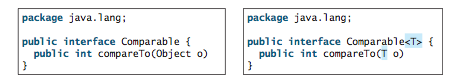
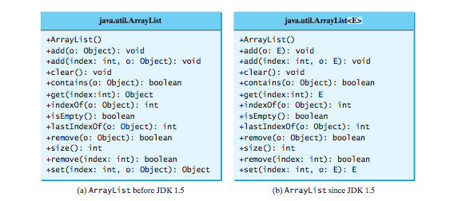
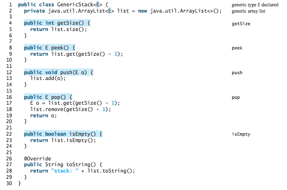
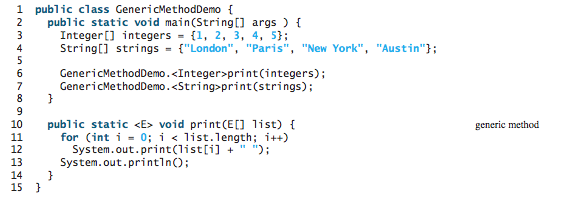

S203: Programming with Data Structure
Lecture 1
Reading assignment: chapter 19
Lesson Objectives
- To descriibe the benefits of generics
- To use generic classes and interfaces
- To define generic classes and interfaces
- To explain why generic types can improve reliability and readability
- To define and use generic methods and bounded generic types
- To develop a generic sort method to sort an array of Comparable objects
- To explain why wildcard generic types are necessary
- To describe generic type erasure and list certain restrictions and limitations on generic types caused by type erasure
Generics Overview
Generics let you parameterize types. The key benefit of generics is to enable errors to be detected at compile time rather than at runtime. A generic class or method permits you to specify allowable types of objects that the class or method can work with. If you attempt to use an incompatible object, the compiler will detect that error.
Examples of Generics in Action
Comparable before JDK 1.5 and after JDK 1.5
UML Class Diagram of an ArrayList
ArrayList<...> myList = new ArrayList<...>()
To create an array of Strings:
ArrayListmyList = new ArrayList (); myList.add("cookies"); myList.add("milk"); String second = myList.get(1);
Note that casting (in the above example) is no longer required.
Roll our own Generic Class
Roll our own Generic Method
Generics and Wild Card
Erasure Type
Lab Exercises
For each of the following exercises, practice developing and running your program with Eclispe. Note that the lab assignments are not graded.
- Implement a Generic Queue class.